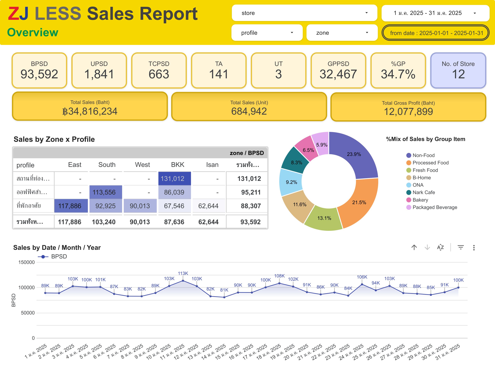
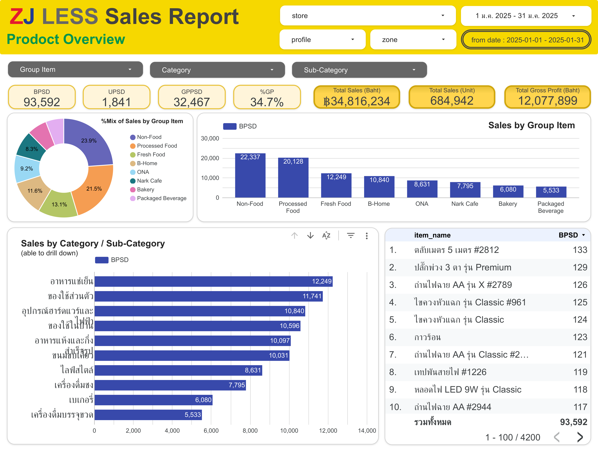
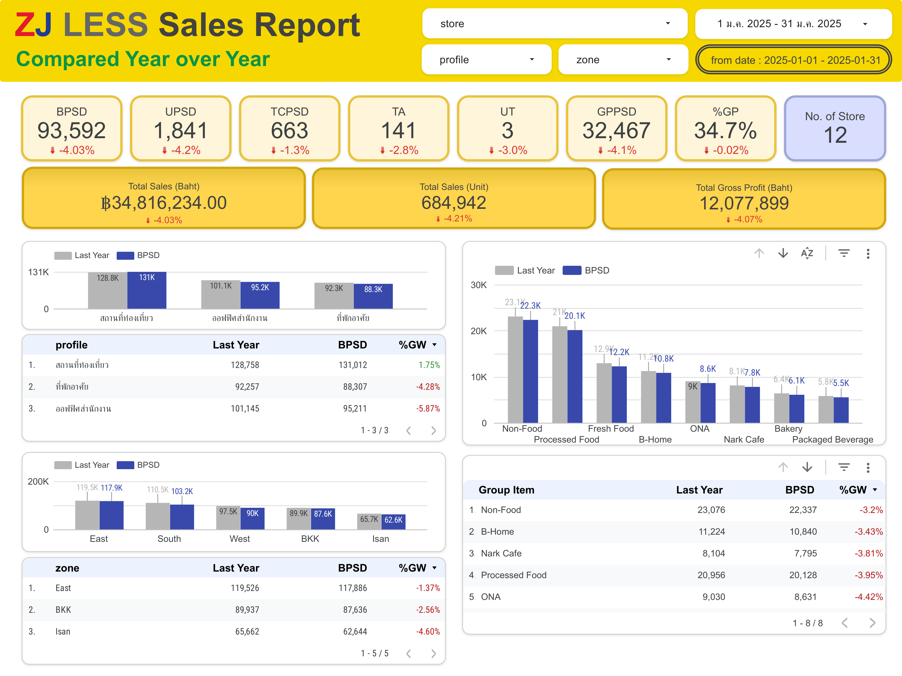
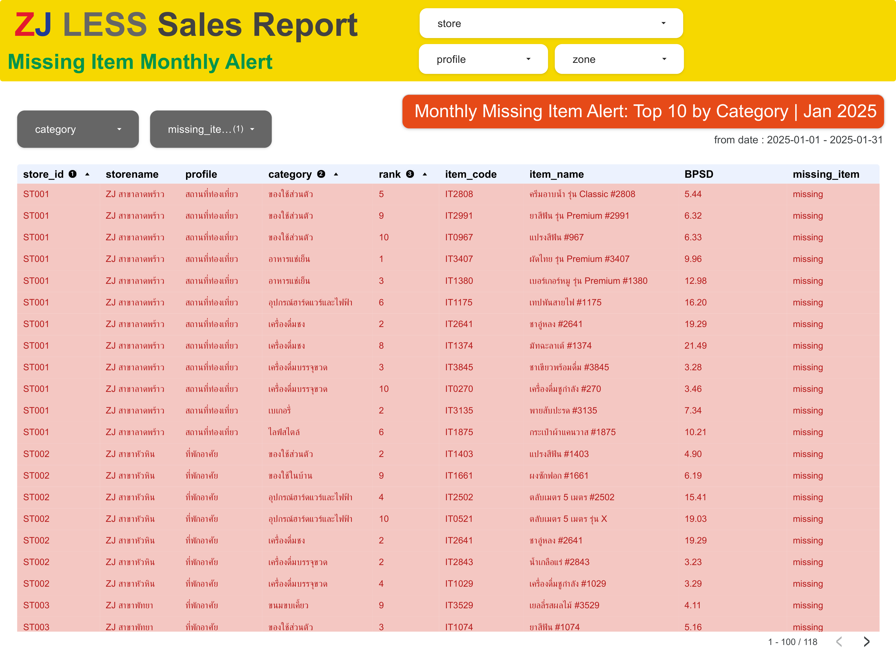

ระบบคลังข้อมูลบน Google BigQuery และ Dashboard วิเคราะห์กลยุทธ์ค้าปลีก 12 สาขา พร้อมระบบชี้เป้าเพิ่มยอดขาย "Missing Item Alert"




ในธุรกิจรีเทล เราไม่สามารถเปรียบเทียบยอดขายรวมระหว่างสาขาใหญ่ที่เปิดทุกวันกับสาขาเล็กที่เปิดไม่เต็มเดือนได้โดยตรง รายงานนี้จึงใช้ตัวชี้วัดมาตรฐาน "Per Store Day (PSD)" โดยมีหัวใจสำคัญคือ ตัวหาร (Denominator) จะต้องใช้ "ผลรวมจำนวนวันที่ร้านเปิดขายจริงรวมกันทุกร้าน" (Total Store Operating Days) ไม่ใช่การเอาสาขามาคูณวันตรงๆ เพื่อความแม่นยำสูงสุดตามจริง:
Total Sales (Baht) / Total Store Operating Days
Total Units Sold / Total Store Operating Days
Total Transactions / Total Store Operating Days
Total Gross Profit (Baht) / Total Store Operating Days
Total Sales / Total Transactions (or BPSD / TCPSD)
Total Units Sold / Total Transactions (or UPSD / TCPSD)
(Total Gross Profit / Total Sales Revenue) × 100
ออกแบบฟังก์ชันการใช้งานหน้า Dashboard ให้ตอบโจทย์ทั้งผู้บริหารและทีมปฏิบัติการหน้าร้าน
ประยุกต์ใช้หลักการปฏิบัติจริงของธุรกิจค้าปลีก (Retail Assortment Best Practices) ในการสร้าง Data Model บน BigQuery เพื่อชี้เป้าเพิ่มยอดขายให้แต่ละร้านอย่างแม่นยำ
ทำไมส่วน Missing ถึงไม่จำเป็นต้องเลือกเวลาย้อนหลัง?
เพราะในการใช้งานจริง ระบบถูกออกแบบให้รัน Pipeline อัตโนมัติใน "ทุกๆ สิ้นเดือน (Monthly Batch Job)" เพื่อให้ผู้จัดการสาขามุ่งเน้น Action สั่งของเข้ามาเติมทันทีแบบ "เดือนต่อเดือน" จึงไม่จำเป็นต้องใช้ Time-range Filter เพื่อลดความซ้ำซ้อนและสร้าง Focus ในการปฏิบัติงานจริง
คำนวณยอดขายเฉลี่ยต่อร้านต่อวัน (BPSD) ของแต่ละสินค้าจากทุกสาขา เพื่อจัดอันดับหา Top 10 สินค้าขายดีที่สุดในแต่ละ Category
ตรวจสอบไขว้กับข้อมูลร้าน โดยสินค้า 'Missing' ต้องเข้าเงื่อนไข: ไม่มีทั้งยอดขาย + ไม่มีทั้งยอดสั่งซื้อ + ไม่มีสินค้าในสต็อก เพื่อความแม่นยำ
แสดงค่า BPSD ของสินค้าตัวนั้นในรายงาน เพื่อให้ผู้จัดการร้านรู้ทันทีว่า หากนำเข้าสินค้าตัวนี้ จะช่วยสร้างรายได้เพิ่มให้ร้านเฉลี่ยวันละกี่บาท
สถาปัตยกรรมข้อมูลบน BigQuery: เก็บข้อมูลธุรกรรมดิบไว้ที่ตารางหลัก (fact_sales) แล้วประมวลผลสรุป (Aggregated Summary) เป็นตารางย่อยเพื่อเพิ่มความเร็วในการใช้งานและการทำรายงาน
เพื่อป้องกัน "ตัวหารคลาดเคลื่อน" เมื่อกรองสินค้า (เช่น หากกรองเฉพาะ "สินค้าชาเขียวพรีเมี่ยม" ซึ่งบางสาขาขายไม่ได้ หากดึงจากตารางยอดขายรายสินค้าอย่างเดียว ตัวหารจะหดเหลือเฉพาะวันที่ของสาขาที่ขายได้ ส่งผลให้ค่าเฉลี่ย BPSD สูงเกินจริง) เราจึงใช้ Data Blending บน Looker Studio เพื่อเชื่อมตารางยอดขายรายสินค้า เข้ากับตารางยอดขายร้านรายวัน (ถ้าร้านมียอดขายเท่ากับว่าเปิดร้าน) ช่วยให้การคำนวณค่า BPSD ยืดหยุ่นและถูกต้อง 100% เสมอ
การสร้างตารางบน BigQuery เพื่อต่อเข้า Looker Studio หากมีฟิลด์ที่เป็นวันที่ (Date) **ควรทำการ Partitioning ทุกตาราง** เพื่อความประหยัดและรวดเร็ว เนื่องจากหากไม่มีการ Partition ทุกครั้งที่ Looker Studio มีการรีเฟรชหรือประมวลผล ระบบจะทำการสแกนข้อมูลทั้งตาราง (Full Table Scan) ทุกครั้ง แม้เราจะกดกรองเฉพาะช่วงวันที่หน้ารายงานแล้วก็ตาม